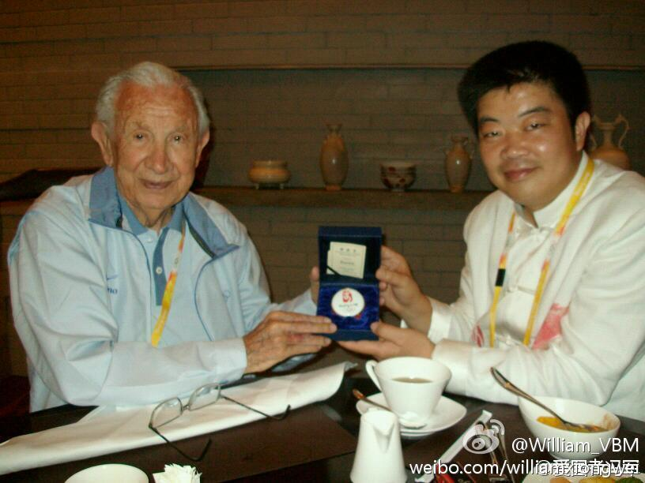

之前一直属老板对某项目的态度是当个“command center”, 就是召集各部门开个会儿，给大家派些活儿，到时收收报告，往上就可以交差了。我疑惑这定位和方法是否见效，但鉴于她比我在公司多混了十多年，应该比我更懂规则行情，就姑且听她的。结果是无效，根本没人鸟你。这方法也就是大老板督阵时有效。
你说得很对。//@mysqlops:责任落实到个人，且配合惩罚奖励机制就成 阿里巴巴就是这样做的！@Ada李力:之前一直属老板对某项目的态度是当个“command center”, 就是召集各部门开个会儿，给大家派些活儿，到时收收报告，往上就可以交差了。我疑惑这定位和方法是否见效，但鉴于她比我在公司多混了十多年，应该比我更懂规则行情，就姑且听她的。结果是无效，根本没人鸟你。这方法也就是大老板督阵时有效。
我遇到的例子：运营部门考虑用户体验，希望用户界面干干净净，商务部门为营收，要在界面上放广告，越多越好。如果推送广告正好是用户希望看到的，自然可以双赢，但实际操作中，远不会那么理想，配合是空谈啊。@Ada李力:部门间不配合的原因之三：部门目标设置相互之间有冲突。比如在客户限定的预算下，买了产品，就要少买服务。多买了服务，产品配置就低。这问题无解，只能公司内自己人打个不可开交了。
我在CSDN社区里泡的时候，遇到过莫名其妙被删帖。当时就觉得，审核后台应该加上删帖通知，以及删帖备份功能。但和产品经理沟通时，发现这个需求已经被讨论过很多次，有国情的缘故，有商务的缘故，最后的结论往往是：最好不通知，以免知道得太多，用户伤心。
国内做这种模式的多吗？//@刘松--甲骨文: 如果是真的，也是商业模式啊@William_VBM:关于@爱国者冯军 及华旗资讯，近期《IT时代周刊》用词严肃：“冯军大部分时间用于带联盟会员的企业高官们出国考察，来自联盟企业会员的年费、会费代替产品成为了爱国者较大的收入来源。有分析人士指出，随着冯军越来越‘不务正业’，曾经炒作一时的爱国者已与消费电子市场渐行渐远。” --关注华旗！ 
回复@郑昀:我们在改进产品和服务，并对你所遇到的事情很抱歉。才知道你离开的原因，当年你还给我的博文评论过，印象颇深。 //@郑昀:我就是因为CSDN博客删博文不做任何通知也不做任何解释即使私下里问他们管理层也不解释，就此一怒清空所有存档文章彻底退出的。我作为访问量前十的技术专家，辛辛苦苦写@Ada李力:我在CSDN社区里泡的时候，遇到过莫名其妙被删帖。当时就觉得，审核后台应该加上删帖通知，以及删帖备份功能。但和产品经理沟通时，发现这个需求已经被讨论过很多次，有国情的缘故，有商务的缘故，最后的结论往往是：最好不通知，以免知道得太多，用户伤心。
这个建议不错。 //@song1w:其实通知用模板就好，“由于众所周知的预案原因，你的帖子被删除”、“你的帖子被删除，原因有关方面不让我说”、“删帖了，你懂的”，一些原因本来就是笑话嘛，轻松对待呗。 //@谊昌:难道不能详细地说明原因吗？？疑惑～为什么？我们不做恶，但是我们更不应该沉默！@Ada李力:我在CSDN社区里泡的时候，遇到过莫名其妙被删帖。当时就觉得，审核后台应该加上删帖通知，以及删帖备份功能。但和产品经理沟通时，发现这个需求已经被讨论过很多次，有国情的缘故，有商务的缘故，最后的结论往往是：最好不通知，以免知道得太多，用户伤心。
沈阳中街的麻酱雪糕，有机会你应该尝尝。@song1w:在北京住了十来年了，还是不能接受凉拌食品放麻酱这种风俗，麻酱不是只有吃火锅时才用的吗？！每次去点凉皮凉面凉拌面时都要强调不要麻酱，店员不约而同的向我投来怜悯的目光……
//@黄佟佟:讲动物就都讲动物，别男人可以动物，女人就只能圣母……//@咆哮女郎柏邦妮: 如果如此，请男人们理解女人的动物本性：要为自己的孩子挑选强壮的父亲，要为后代的繁衍选择更好的基因，所以，别怪女人们选择高富帅。如果这个接受不了，要谈伟大的爱情，就不要跟我们扯淡什么动物本性。@妞博网:《动物本性不支持一夫一妻制？》第一次听到“男人为什么不满足于一个伴侣，是因为繁衍的本性”的论断，是来自一个特别普通的中国男人，高学历，稳定的收入，来自正常的家庭，也拥有正常的家庭，说起这事是因为他在劝我早点结婚，同时不要介意男人的三心二意，他说这是动物的本性网页链接
#社区运营# 物业经理和住户常闹纠纷的事情，除了物业费与服务外，就算领域管辖的问题了。例如，住户的花园，住户的外墙装修，是住户可自由发挥，物业无权干涉的地方吗？显然不是，物业往往对此有统一规定。但怎么规定，以及怎么执行，物业水平的差异就显现出来了。
 网页链接
网页链接